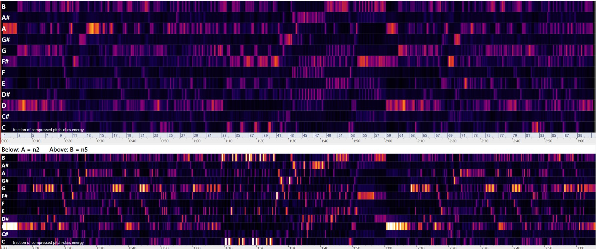

A/B comparison
The question: how do these two differ, at the same moment?
Select a node and press Mark as A; another, Mark as B. Both appear, one above the other, on one time axis. Space plays, Tab switches between them without losing the place.

12345- Above, B: block chords made from the labels alone.
- Below, A: the performance.
- The header says which is which.
- Same D at 2:00 in both: the labels and the sound agree about the reprise.
- Only the upper ruler has bars; the lower one shows time.
Use it to compare a recording with its transcription, two transcribers, a plan with a piece, or two performances. Waveform, spectrogram and chromagram are shown for both; the structure views are shown for the selected piece only.
| Looks like | What it is | How to read and use it |
|---|---|---|
| Red lines in both views | The same moment in A and in B. | |
| Tinted bands between two piano rolls | Fragments the program found in both pieces (after Synchronize); the thin lines join matching moments. |
Read more
- FMP C3S2: dynamic time warping (the idea behind aligning two versions)